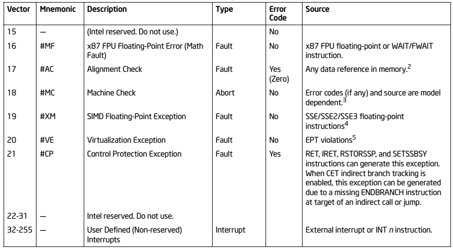
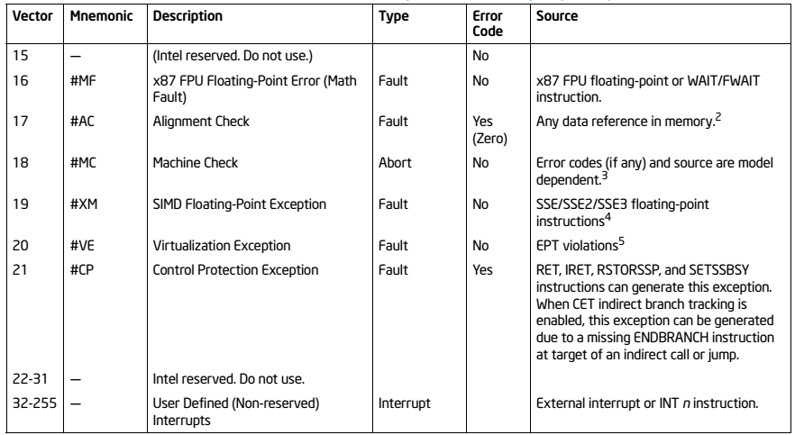

Program control Instructions¶
约 11190 个字 22 行代码 45 张图片 预计阅读时间 39 分钟
The Jump Group¶
允许程序员跳过程序部分，并通过无条件或有条件跳转指令，将下一条指令的执行转移到内存的任意位置。
- 有条件跳转指令允许基于数值测试进行决策。
- 测试的结果存放在标志位中，条件跳转指令会对标志位进行检测。
- LOOP 和条件LOOP也是跳转指令的一种形式。
JMP¶
- 分三种类型：Short Jump、Near Jump和Far Jump。
- Short Jump是一条2字节指令，允许跳转(或分支)到距离跳转指令之后+127到-128字节的内存地址。
- Near Jump是一条3字节指令，允许在当前代码段内，距指令±32K字节范围内进行跳转或分支。
- Far Jump是一条5字节指令，允许跳转到实模式内存系统中的任意内存位置。
- Short Jump和Near Jump通常称为段内跳转(intrasegment jumps)。
- Far Jump称为段间跳转(intersegment jumps)。

Short Jump¶
- 格式：JMP SHORT
- 示例：JMP SHORT 100
称为Relative Jump，是因为与相关软件一起，这类跳转可以被移动到当前代码段的任意位置而无需更改。
- 跳转地址并不与操作码一起存储。
- 在操作码后面跟随一个距离值（位移）。
- 短跳转的位移以1字节有符号数表示，取值范围为+127到-128。
当微处理器执行短跳转时，位移值会被符号扩展并加到指令指针(IP/EIP)上，以生成当前代码段内的跳转地址。指令将跳转到这个新地址，执行程序中的下一条指令。
- 当跳转指令引用一个地址时，通常使用标签来标识该地址。
- JMP NEXT 指令就是一个例子。
- 它跳转到标签 NEXT 处执行下一条指令
- 在任何跳转指令中使用实际的十六进制地址是非常罕见的
- 标签 NEXT 后面必须跟一个冒号（NEXT:），才能让指令引用它
- 如果后面没有冒号，就无法跳转到该标签
- 只有当标签与跳转或调用指令一起使用时，才需要使用冒号。
Near Jump¶
在实模式下，近跳转是一条3字节指令，操作码后跟一个有符号的16位位移量。
- 近跳转将控制权传递给当前代码段内的一条指令，该指令位于近跳转指令的±32K字节范围内。
- 80386 - Pentium 4 的位移量是32位，近跳转为5字节长。
-
在保护模式下，80386及更高版本的跳转距离为±2G。
-
有符号位移量加到指令指针(IP)上以生成跳转地址。
- 由于有符号位移量为±32K，近跳转可以跳转到当前实模式代码段内的任意内存位置。
- 80386及更高版本的保护模式代码段可达4G字节长。
- 32位位移量允许近跳转到±2G字节范围内的任意位置。
下图展示了实模式近跳转指令的操作方式。

近跳转也是可重定位1的，因为它也是相对跳转。
- 这一特性，加上可重定位的数据段，使Intel微处理器非常适合在通用计算机系统中使用。
- 由于相对跳转和可重定位数据段的存在，软件可以被编写并加载到内存的任何位置，无需修改即可正常运行。
Example
以下示例展示了一个包含近跳转的程序。

- 第一条跳转指令（JMP NEXT）将控制权传递给代码段内偏移地址为0200H处的指令。
- 注意该指令汇编后为 E9 0200 R。字母 R 表示0200H是一个可重定位的跳转地址。
- 链接后，跳转指令显示为 E9 F6 01（01F6H是实际的位移量）。
Far Jump¶
远跳转通过获取一个新的段地址和偏移地址来完成跳转。
- 在实模式下，它是一条5字节指令
- 第2和第3字节包含新的偏移地址
- 第4和第5字节包含新的段地址
- 在保护模式下
- 段地址用于访问一个描述符，该描述符包含远跳转段的基地址
- 偏移地址（16位或32位）包含新代码段内的偏移地址
实现远跳转有两种方式：
- 使用 FAR PTR 指令，例如
JMP FAR PTR START - 定义一个远标签，例如
EXTRN START:FAR
标签只有在当前代码段或过程的外部时才是远标签。外部标签出现在包含多个程序文件的程序中。
定义一个可以从过程块外部访问的远标签有两种方式：
- 使用 EXTRN 指令，例如 EXTRN START:FAR
- 使用双冒号，例如 START::
Example
例如，当标签 UP 通过 EXTRN UP:FAR 指令定义为远标签时，JMP UP 指令就引用了一个远标签。
当程序文件被链接在一起时，链接器会将 UP 标签的地址插入到 JMP UP 指令中。同样，链接器也会将段地址插入到 JMP START 指令中。

Jumps with Register Operands¶
跳转指令也可以使用16位或32位寄存器作为操作数。
- 这会自动设置为绝对间接跳转
- 跳转地址存储在跳转指令指定的寄存器中
与近跳转相关的位移量不同，寄存器内容会直接传送到指令指针中。
绝对间接跳转不会对指令指针进行加法运算。
例如，JMP AX 将AX寄存器的内容复制到IP中。
- 这允许跳转到当前代码段内的任意位置
在80386及更高版本中，JMP EAX 也可以跳转到当前代码段内的任意位置：
- 在保护模式下，代码段可以长达4GB，因此需要32位偏移地址
Indirect Jumps Using an Index¶
跳转指令也可以使用 [ ] 形式的寻址方式（例如 JMP TABLE [SI]）来直接访问跳转表。
- 跳转表可以包含用于近间接跳转的偏移地址，或用于远间接跳转的段地址和偏移地址。
- 如果将寄存器跳转称为间接跳转，那么这种方式也被称为双重间接跳转
- 汇编器假定跳转为近跳转，除非使用 FAR PTR 指令指示这是一条远跳转指令。
访问跳转表的机制与普通内存引用相同。
JMP TABLE [SI]指令指向存储在数据段偏移位置（由 SI 寻址）的跳转地址
寄存器跳转和间接索引跳转指令通常都寻址16位偏移量。
- 这两种类型的跳转都是近跳转
Note
如果使用 JMP FAR PTR [SI] 或 JMP TABLE [SI]，且 TABLE 数据使用 DD 指令定义：微处理器假定跳转表包含双字、32位地址（IP 和 CS）
这里的意思是：
- 当使用
JMP FAR PTR [SI]时，明确指示这是一个远跳转 - 当 TABLE 使用
DD（Define Double Word，定义双字）指令声明时，每个表项占用4个字节 - 这4个字节包含完整的远地址：低2字节是偏移地址（存入IP），高2字节是段地址（存入CS）
- 因此微处理器会从跳转表中读取32位数据，将其作为 段:偏移 格式的远跳转目标地址
Conditional Jumps and Conditional Sets¶
在 8086 – 80286 中，条件跳转指令始终是短跳转。
- 范围限制在条件跳转指令之后的 +127 到 –128 字节之内
在 80386 及更高版本中，条件跳转可以是短跳转或近跳转（±32K）。
- 在 Pentium 4 的 64 位模式下，条件跳转的近跳转距离为 ±2G
- 这允许条件跳转到当前代码段内的任意位置
条件跳转指令测试标志位：
- 符号位（S）、零标志位（Z）、进位标志位（C）
- 奇偶标志位（P）、溢出标志位（O）
如果测试条件为真，则跳转到标签处。
如果为假，则执行程序的下一条顺序指令。
例如，如果进位位被设置，JC 将会跳转。
尽管有些指令会测试多个标志位,大多数条件跳转指令都很直接，因为它们通常只测试一个标志位。
Example
如何比较有符号值和无符号值？例如，当比较 -1（0xFF）和 1（0x01）时，-1 看起来更大。
有符号比较和无符号比较是相同的。关键在于你如何解释标志位。
MOV EAX, -1 ; EAX = 0xFFFFFFFF (-1 的补码表示)
CMP EAX, 1 ; 计算 EAX - 1 = 0xFFFFFFFF - 1 = 0xFFFFFFFE
; 结果标志位: Z=0 (结果非零), C=0 (无借位), S=1 (结果为负), O=0 (无溢出)
JA LABEL ; JA (Jump if Above) 用于无符号比较
; 跳转条件: Z=0 且 C=0
; 由于 C=0 且 Z=0，条件满足，会跳转到 LABEL
; 这说明在无符号比较中，0xFFFFFFFF (4294967295) > 1
-
无符号比较 (JA/JB 等) ：使用进位标志 C 和零标志 Z
JA(Jump if Above)：当 C=0 且 Z=0 时跳转（无符号大于）JB(Jump if Below)：当 C=1 时跳转（无符号小于）
-
有符号比较 (JG/JL 等)：使用符号标志 S、溢出标志 O 和零标志 Z
JG(Jump if Greater)：当 Z=0 且 S=O 时跳转（有符号大于）JL(Jump if Less)：当 S≠O 时跳转（有符号小于）
在上例中，如果改用 JG LABEL（有符号比较）：
- 跳转条件：Z=0 且 S=O
- 实际情况：Z=0, S=1, O=0，由于 S≠O，不会跳转
由于编程中同时使用有符号数和无符号数，且这两种数的排列顺序不同，因此存在两套用于大小比较的条件跳转指令。
下图展示了有符号和无符号 8 位数字的排列顺序。

当比较无符号数时，使用 JA、JB、JAE、JBE、JE 和 JNE 指令。
- 术语 "above"和 "below"指的是无符号数
当比较有符号数时，使用 JG、JL、JGE、JLE、JE 和 JNE 指令。
- 术语 "greater than"和 "less than"指的是有符号数

Info
所有指令都有替代形式，但许多在编程中并不常用，因为它们通常不适合被测试的条件。例如，JA（Jump if Above）可以用 JNBE（Jump if Not Below or Equal）替代，两者功能完全相同，只是助记符不同。
除了 JCXZ（当 CX = 0 时跳转）和 JECXZ（当 ECX = 0 时跳转）之外，所有条件跳转指令都是通过测试标志位来工作的。
JCXZ 不测试标志位，而是直接测试 CX 寄存器的内容，且不影响标志位；JECXZ 则测试 ECX 寄存器的内容。
对于 JCXZ 指令：
- 如果 CX = 0，则发生跳转
- 如果 CX != 0，则不跳转
对于 JECXZ 指令同理：如果 ECX = 0，则发生跳转；如果 ECX != 0，则不跳转。
The Conditional Set Instructions¶
80386 至 Core2 处理器还包含条件设置指令。
-
条件设置字节指令（SETcc） 会检查 EFLAGS 寄存器中的状态标志位。
- 如果标志位满足助记符（cc）指定的条件，则将指定的 8 位内存位置或寄存器设置为 1。
- 如果标志位不满足指定条件，SETcc 会将该内存位置或寄存器清零为 0。
-
例如，
SETC EAX：- 如果进位标志被设置，EAX = 01H
- 如果进位标志被清除，EAX = 00H
-
EAX 的内容可以在程序的后续位置进行测试，以确定在执行
SETC EAX指令时进位标志是否被清除。 -
条件设置指令在需要在程序中较后位置测试某个条件时非常有用。

Example

LOOP¶
LOOP 指令使用 RCX/ECX/CX 作为计数器执行循环操作。
-
LOOP 指令等价于：
SUB RCX/ECX/CX, 1JNZ label
-
每次执行 LOOP 指令时，计数器会递减，然后检查是否为 0：
- 如果 CX != 0，则执行近跳转到标签处
- 如果 CX 变为 0，则执行下一条指令
-
LOOP 指令不影响任何标志位。
-
在 16 位指令模式下，LOOP 使用 CX；在 32 位模式下，LOOP 使用 ECX。
-
在 64 位模式下，循环计数器位于 RCX 中，宽度为 64 位。
-
所使用的计数寄存器大小（CX、ECX 或 RCX）取决于 LOOP 指令的地址大小属性。

BLOCK2 = BLOCK2 + BLOCK1
Conditional Loops¶
LOOP 指令还有条件形式：LOOPE 和 LOOPNE
语法：
LOOPE destinationLOOPNE destination
LOOPE（相等时循环）指令：
- 接受 ZF 标志作为在计数到达零之前终止循环的条件。
- 当条件不相等或 CX 寄存器递减到 0 时退出循环。
LOOPNE（不相等时循环）指令：
- 当 CX != 0 且存在不相等条件时跳转。
- 当条件相等或 CX 寄存器递减到 0 时退出循环。
用途：
- LOOPE 在扫描数组以查找第一个与给定值不匹配的元素时很有用。
- LOOPNE 在扫描数组以查找第一个与给定值匹配的元素时很有用。
- LOOPE 和 LOOPNE 指令不影响任何标志位。
处理器差异：
- 在 80386 - Core2 处理器中，条件 LOOP 可以使用 CX 或 ECX 作为计数器。
- 如果需要，LOOPEW/LOOPED 或 LOOPNEW/LOOPNED 可以覆盖指令模式。
- 在 64 位操作下，循环计数器使用 RCX，宽度为 64 位。
替代形式：
- LOOPE 与 LOOPZ 相同
- LOOPNE 与 LOOPNZ 相同
在大多数程序中，只使用 LOOPE 和 LOOPNE。
Example
TEST指令直接比较[ESI]处的符号位，如果是负数，符号位为1，test出来不为零，Z=0，继续LOOP，当遇到正数，符号位为0，test出来为零，Z=1，LOOPNZ退出循环。
For & Do-While & While
- Do-While 循环：先执行循环体，再判断条件,直接使用jcc
- While 循环：先判断条件，再执行循环体,使用 double jump来判断第一次循环，然后就变成do-while循环。
- For 循环：先判断条件，再执行循环体,循环体末尾改变计数器,使用 double jump，与while类似
CONTROLLING THE FLOW OF THE PROGRAM¶
使用汇编语言伪指令 .IF、.ELSE、.ELSEIF 和 .ENDIF 来控制程序流程比使用正确的条件跳转语句要容易得多。
- 这些语句始终表示 MASM 的特殊汇编语言命令
- 以点开头的控制流汇编语言语句仅适用于 MASM 6.xx 及更高版本，不适用于早期版本
其他开发的伪指令包括 .REPEAT–.UNTIL 和 .WHILE–.ENDW。
这些点命令在 Visual C++ 内联汇编器中不起作用，在使用内联汇编器时，永远不要使用大写字母编写汇编语言命令。其中一些是 C++ 的保留字，会导致问题
| 类别 | 伪指令 |
|---|---|
| 条件判断 | .IF, .ENDIF, .ELSE, .ELSEIF |
| While 循环 | .WHILE, .ENDW |
| Repeat 循环 | .REPEAT, .UNTIL, .UNTILCXZ |
| 循环控制 | .BREAK, .CONTINUE |
| 运算符 | 描述 | 运算符 | 描述 |
|---|---|---|---|
| ! | 逻辑非 (logical not) | <= | 小于等于 (less or equal) |
| != | 不等于 (not equal) | == | 等于 (equal) |
| || | 逻辑或 (logical or) | > | 大于 (greater than) |
| && | 逻辑与 (logical and) | >= | 大于等于 (greater or equal) |
| < | 小于 (less than) | & | 按位与 (bitwise and) |
| 标志位测试 | 描述 |
|---|---|
| CARRY? | 进位测试 (carry test) |
| PARITY? | 奇偶测试 (parity test) |
| SIGN? | 符号测试 (sign test) |
| ZERO? | 零测试 (zero test) |
| OVERFLOW? | 溢出测试 (overflow test) |
Example
该示例展示了如何使用 .IF 和 .ENDIF 语句通过测试 AL 中的 ASCII 字母 A 到 F 来控制程序流程。如果 AL 的内容是 A 到 F，则从 AL 中减去 7。
如果不使用directives
使用directives
WHILE LOOPS¶
.WHILE语句与条件一起使用来开始循环。.ENDW语句结束循环
.BREAK和.CONTINUE语句可用于 while 循环。.BREAK通常后跟.IF来选择中断条件，如.BREAK .IF AL == 0DH.CONTINUE可用于在满足特定条件时允许DO–.WHILE循环继续执行
.BREAK和.CONTINUE命令的功能与 C++ 中相同。
Example
以下示例展示了如何使用 .WHILE 语句从键盘读取数据并存储到数组 (BUF) 中，直到按下回车键 (0DH)。

*号的行展示了.REPEAT和.UNTIL指令在汇编后的实际代码：
STOSB：将 AL 中的字符存储到 ES:DI 指向的位置，并自动递增 DIMOV BYTE PTR[DI-1], '$'：用$替换回车符，因为 DOS 的 INT 21H 功能 9 需要以$作为字符串结束符MOV DX, OFFSET BUF：将缓冲区地址加载到 DXMOV AH, 9和INT 21H：调用 DOS 中断显示字符串
REPEAT-UNTIL Loops¶
- 一系列指令重复执行，直到某个条件发生。
.REPEAT语句定义循环的开始。- 循环的结束由
.UNTIL语句定义，该语句包含一个条件。 .UNTILCXZ指令使用 LOOP 指令来检查 CX 以实现重复循环。.UNTILCXZ使用 CX 寄存器作为计数器，以固定次数重复循环
Example
以下示例展示了如何使用 REPEAT-UNTIL 从键盘读取数据并存储到数组 (BUF) 中，直到按下回车键 (0DH)

*号的行展示了.REPEAT和.UNTIL指令在汇编后的实际代码：
以下代码使用 .UNTILCXZ 将字节数组 ONE 的内容与字节数组 TWO 相加。求和结果存储在数组 THREE 中。

PROCEDURES¶
- 过程（Procedure）是一组通常执行单一任务的指令。
- 子程序（subroutine）、方法（method）或函数（function）是任何系统架构的重要组成部分
- 过程是存储在内存中一次、可根据需要多次使用的可重用软件段。
- 节省内存空间，使软件开发更加容易
- 过程以
PROC伪指令开始，以ENDP伪指令结束。- 每个伪指令都与过程名称一起出现
PROC后跟过程的类型：NEAR或FAR
- 在 MASM 6.x 版本中，
NEAR或FAR类型后可以跟USES语句。USES允许在过程中自动将任意数量的寄存器压入堆栈，并在过程结束时从堆栈中弹出
RET用于完成或退出过程。

- 需要被所有软件使用的过程（global）应该写成 FAR 过程。
- 仅被特定任务使用的过程（local）通常定义为 NEAR 过程。
- 大多数过程都是 NEAR 过程。
CALL¶
将程序流程转移到过程中。
- CALL 指令与跳转指令不同，因为 CALL 会在堆栈上保存一个返回地址。
-
当 RET 指令执行时，返回地址将控制权返回给 CALL 之后的指令。
-
有四种不同类型的调用：
- Near Call（段内调用）：调用当前代码段内的过程。
- Far Call（段间调用）：调用位于与当前代码段不同的段中的过程。
- Inter-privilege-level Far Call：远调用到与当前执行程序不同特权级的段中的过程。
- Task Switch：调用位于不同任务中的过程。
- 后两种调用类型只能在保护模式下执行。
Near Call¶
执行近调用时：
- 在执行 CALL 指令之前，将参数压入堆栈（由程序员或编译器完成）。
- 将 EIP 寄存器的值压入堆栈（由 CALL 指令完成）。
- 然后跳转到当前代码段中由目标操作数指定的地址。
- 近调用不会改变 CS 寄存器的值。

目标操作数指定两种类型：
- 相对偏移量：相对于指令指针当前值的有符号位移，指向 CALL 指令后面的指令。
- 绝对偏移量：代码段中的绝对偏移量（从代码段基址开始的偏移量）。
对于"near absolute indirect"调用，绝对偏移量通过寄存器或内存位置间接指定。例如：
对于"near relative direct"调用，它的长度为3字节：
- 第一个字节包含操作码；
- 第二和第三个字节包含位移量。
- 它首先将下一条指令的偏移地址压入堆栈。下一条指令的偏移地址保存在指令指针（IP 或 EIP）中。
- 然后它将第2和第3字节的位移量加到 IP 上，以将控制权转移到过程。
为什么要将 IP 或 EIP 保存到堆栈上？
- 指令指针始终指向程序中的下一条指令。
- 对于 CALL 指令，IP/EIP 的内容被压入堆栈。
- 当过程结束后，程序控制权返回到 CALL 之后的指令。
下图显示了存储在堆栈上的返回地址（IP）以及对过程的调用。

Far Call¶
5字节指令包含一个操作码，后跟 IP 和 CS 寄存器的新值。
- 第2和第3字节包含 IP 的新内容
- 第4和第5字节包含 CS 的新内容
- Far CALL 在跳转到第2至第5字节指定的地址之前，将 IP 和 CS 的内容都压入堆栈。

这使得远调用（Far CALL）可以调用位于内存任何位置的过程，并从该过程返回。
- 在64位模式下，远调用可以跳转到任意内存位置，压入堆栈的信息是一个8字节的数值。
- 远返回指令从堆栈中检索8字节的返回地址，并将其放入 RIP 寄存器
- 下图展示了远调用如何调用一个远过程。
- CS 和 IP 的内容被压入堆栈

Example
此示例展示了如何使用 CALL 寄存器指令来调用一个过程，该过程位于当前代码段中偏移地址 DISP 处，用于显示 'OK'
当程序中需要选择不同的子程序时，这种方式特别有用。
- 本质上与使用查找表获取跳转地址的间接跳转相同。
- 如果指令以
CALL FAR PTR [4*EBX]或CALL TABLE [4*EBX]的形式出现，CALL 指令也可以引用远指针，前提是表中的数据被定义为双字（doubleword）。

RET¶
从堆栈中移除一个16位数值（near return）并将其放入 IP 寄存器，或者移除一个32位数值（far return）并将其放入 IP 和 CS 寄存器。
- 过程的 PROC 指令中包含近返回和远返回指令，自动选择正确的返回指令
下图展示了在实模式下运行的 8086–Core2 处理器中，CALL 指令如何链接到一个过程，以及 RET 如何返回。

Info
对于在保护模式下运行的 80386 至 Pentium 4 处理器，远返回（far return）会从堆栈中移除 6 个字节：
- 前 4 个字节包含 EIP 的新值
- 后 2 个字节包含 CS 的新值
在 80386 及更高版本中，保护模式下的近返回（near return）会从堆栈中移除 4 个字节并将其放入 EIP。
另一种形式的返回指令（RET n）在从堆栈中移除返回地址后，会将一个数值加到堆栈指针（SP）的内容上。
- 如果 RET 指令中包含一个立即数操作数，堆栈指针将按照所指示的字节数进行调整。

通过使用 BP 寄存器在堆栈上对参数进行寻址，BP 寄存器用于访问堆栈段。该示例展示了这种类型的返回指令如何清除通过几次 push 操作放置在堆栈上的数据。RET 4 在从堆栈中移除返回地址后，会将 4 加到 SP 上。从而清理了栈上的BX和AX.

Transfer Control Between Privilege Levels¶
分支指令也可以用于将控制权转移到运行在不同特权级别的其他代码。在这种情况下，处理器会自动检查源程序和目标程序的特权级别，以确保在执行控制转移操作之前该转移是被允许的。
进行跨特权级别远调用的三种方式：
- 定义一致性代码段（conforming code segments）以便在不同特权级别之间共享库（例如数学库）
- 通过称为"门"（Gates）的特殊段描述符
Example
假设 Ring 3 程序想调用一个内核函数：
用户态：执行 CALL FAR 0x20:00000000（0x20 是调用门的选择子）。
CPU 硬件动作：
- 发现 0x20 对应的是一个调用门。
- 检查：Ring 3 是否有权访问这个门？（是）
- 检查：通过门是否能去往 Ring 0？（是）
- 加载 Ring 0 栈：从 TSS 读取 SS0:ESP0。
- 压栈保存：在 Ring 0 栈上压入旧的 SS、ESP、CS、EIP。
- 复制参数：如果有参数，从用户栈搬运到内核栈。
- 更新 CS:EIP：从门描述符加载目标代码段选择子和偏移量。
- 特权级变更：CPL 变为 0。
内核态：执行服务程序。
返回：内核执行 RET FAR。
- CPU 检测到这是一个跨特权级的返回。
- 弹出旧的 CS, EIP, SS, ESP。
- CPL 变回 3，切回用户栈，继续执行。
- 利用快速系统调用指令（SYSCALL/SYSRET 或 SYSENTER/SYSEXIT）从 Ring 3 访问 Ring 0
INTRO TO INTERRUPTS¶
中断和异常会强制将控制权从当前正在执行的程序转移到处理中断事件的系统软件服务例程。这些例程被称为异常处理程序和中断处理程序，或中断服务过程（ISP）。
在向 ISP 进行控制转移的过程中，处理器会停止执行被中断的程序并保存其返回指针。处理异常或中断的系统软件服务例程负责保存被中断程序的状态。这使得处理器能够在系统处理完事件后重新启动被中断的程序。
处理器使用分配给异常或中断的向量号（中断向量）来索引中断向量表（IVT）或中断描述符表（IDT）。IVT 和 IDT 提供了异常或中断处理程序的入口点：
- IVT 用于real mode
- IDT 用于protected mode and long mode
Info
中断（Interrupts）：
- 是由外部硬件或软件生成的信号，用于向处理器或操作系统内核请求服务。
- 不是 CPU 指令执行过程中错误或异常条件的结果（这是异常的典型特征）。
- 是程序主动发出的请求以获取帮助。
- 大多数中断是异步的（如硬件中断），但使用 INT n 指令的软件中断是同步的。
异常（Exceptions）：
- 是在 CPU 执行指令过程中直接产生的事件，通常由错误或异常条件引起。
- 代表了 CPU 自身识别出的、需要特殊处理的程序正常流程偏离。
- 每个异常都有一个助记符，由井号（#）后跟两个字母以及可选的括号中的错误代码组成。例如，#GP(0) 表示错误代码为 0 的一般保护异常。
Interrupt¶
Source of Interrupts¶
中断主要来自两个来源：
- 外部（硬件生成的）中断：外部中断是一个异步事件，通常由 I/O 设备通过处理器上的引脚或通过本地 PIC（可编程中断控制器）触发。
- 软件生成的中断：软件中断是执行
INT n指令的结果。例如，在 x86 系统上的 Linux 中使用INT 80h来调用系统调用并向操作系统请求服务。
Masking External Interrupts¶
- 软件可以屏蔽某些异常和中断的发生。屏蔽可以延迟甚至阻止异常处理或中断处理机制的触发。
- 外部中断分为可屏蔽和不可屏蔽两类：
- 可屏蔽中断：只有当
FLAGS.IF=1时，才会通过 INTR 引脚触发中断处理机制。否则，只要FLAGS.IF位被清零为 0，它们就会一直保持挂起状态。 - 不可屏蔽中断（NMI）：不受
FLAGS.IF位值的影响。
- 可屏蔽中断：只有当
Interrupt Control¶
- 有两条指令控制可屏蔽中断（连接到 CPU 的 INTR 引脚）。
- 设置中断标志指令（STI）：将 1 放入 I 标志位。
- 这会启用 INTR 引脚
- 清除中断标志指令（CLI）：将 0 放入 I 标志位。
- 这会禁用 INTR 引脚
-
STI 指令启用 INTR，CLI 指令禁用 INTR。
-
在软件中断服务过程中，硬件中断通常作为最初的步骤之一被启用。
- 这通过 STI 指令来完成
- 中断要尽早启用，因为个人计算机中几乎所有的 I/O 设备都是通过中断处理的。
- 如果中断被禁用太长时间，会导致严重的系统问题
Exceptions¶
Sources of Exceptions¶
异常主要来自三个一般来源：
- 程序错误异常：当处理器在执行过程中检测到程序错误时，会生成异常，例如除法错误（#DE）异常。
- 软件生成的异常：INTO、INT1、INT3 和 BOUND 指令允许在软件中生成异常。例如，INT3 会导致生成断点异常。
- 机器检查异常：Pentium 处理器提供机器检查机制，用于检查内部芯片硬件和总线事务的操作。
Precise and Imprecise Exceptions¶
- 精确异常在指令边界上报告。
- 有些在导致异常的指令之前的边界上报告，而有些在导致异常的指令之后的边界上报告。
- 当事件处理程序返回到被中断的程序时，可以在被中断的指令边界处重新启动。
- 非精确异常不保证在可预测的指令边界上报告。
- 非精确事件可以被认为是异步的。
- 被中断的程序不可重新启动。
Three Types of Exceptions¶
- Faults是在导致故障的指令之前的边界上报告的精确异常。
- 可以被纠正并重新启动，而不会丢失连续性。
- 返回地址指向导致故障的指令。
- Traps是在触发trap的指令之后的边界上报告的精确异常。
- 可以继续执行而不会丢失程序连续性。
- 返回地址指向导致陷阱的指令之后的指令。
- Aborts是非精确异常，不允许可靠地重新启动程序。
Interrupt Vectors¶
- 特定的中断和异常源被分配一个固定的向量标识号（称为"interrupt vector"或简称"vector"）。
- interrupt vector被中断处理机制用来定位分配给异常或中断的服务程序。
- 最多可以有 256 个唯一的中断向量。每个向量包含一个 ISP（中断服务程序）的地址。
- Intel 保留了前 32 个interrupt vector用于预定义的异常和中断条件。
- interrupt vector (32-255)可供用户使用。
- 在实模式下：
- 一个 4 字节的数值存储在内存的前 1024 字节中（00000H–003FFH）。
- 由于共有 256 个interrupt vector，每个向量占 4 字节，所以总共需要 256 × 4 = 1024 字节。
- 每个向量包含 IP 和 CS 的值，组成 ISP（中断服务程序）的地址。
- 前 2 个字节包含 IP（偏移地址）；后 2 个字节包含 CS（段地址）。
- 通过 CS:IP 组合可以得到 ISP 的 20 位物理地址。
- 在保护模式下：向量表被中断描述符表（IDT）取代，IDT 使用 8 字节的描述符来描述每个中断。
 

Double fault¶
- 当在处理先前（第一个）异常或中断处理程序期间发生第二个异常时，可能会发生双重故障异常。
- 例如，当触发页面故障但中断描述符表（IDT）中没有注册页面故障处理程序时，就会发生双重故障。
- 通常，第一个和第二个异常可以顺序处理，而不会导致双重故障异常。
- 然而，在某些情况下，第一个异常会对处理器处理第二个异常的能力产生不利影响，此时处理器会发出双重故障异常信号。
- 这些导致双重故障异常发生的异常被称为"贡献性异常"（contributory exceptions）。
只有非常特定的异常组合会导致双重故障。这些组合包括：
| First Interrupting Event | Second Interrupting Event |
|---|---|
| Contributory Exceptions: | Invalid-TSS Exception |
| • Divide-by-Zero-Error Exception | Segment-Not-Present Exception |
| • Invalid-TSS Exception | Stack Exception |
| • Segment-Not-Present Exception | General-Protection Exception |
| • Stack Exception | |
| • General-Protection Exception | |
| Page Fault Exception | Page Fault Exception |
| Invalid-TSS Exception | |
| Segment-Not-Present Exception | |
| Stack Exception | |
| General-Protection Exception |
例如：
- divide-by-zero fault -> page fault: No double fault occurs
-
divide-by-zero fault -> general-protection fault: A double fault occurs
-
如果在尝试调用双重故障处理程序时发生另一个contributory exception或page fault exception，处理器将进入关机模式。
- 在 x86 架构上，triple fault是一种特殊的异常，当 CPU 尝试调用双重故障异常处理程序时发生异常。
- 提供一个双重故障处理程序非常重要，因为如果双重故障未被处理，将发生致命的三重故障，进而导致 CPU 重置。
Error Codes¶
- 某些类型的异常会提供错误代码。错误代码报告有关错误的附加信息，例如 #PF（页面故障代码）。
- 错误代码在控制转移到异常处理程序期间，由异常机制压入堆栈。
- Error code有两种格式：
- selector format：用于报告错误的异常
- page-fault format：用于页面故障

Priority among Simultaneous Exceptions and Interrupts¶
- 当同时发生多个中断时，处理器将控制权转移到最高优先级的中断处理程序。
- 来自外部源的低优先级中断会被处理器挂起，并在高优先级中断处理完成后再进行处理。
- x86 架构定义了中断组之间的优先级，而组内的中断优先级则取决于具体实现。


Real Mode Interrupt control transfer¶
在实模式下，IDT 是一个由 4 字节条目组成的表，系统实现的 256 个可能的中断各对应一个条目。实模式下的 IDT 通常被称为中断向量表（IVT）。
- IVT 表条目包含一个远指针（CS:IP 对），指向异常或中断处理程序。IDT 的基地址存储在 IDTR 寄存器中，在处理器复位时会被加载为 00h。
当实模式下发生异常或中断时，处理器执行以下操作：
- 将 FLAGS 压入堆栈
- 将 FLAGS.IF 清零
- 将 CS 和 IP 压入堆栈
- 将错误代码压入堆栈（如果适用）
- 通过将中断向量乘以 4，在 IDT 中定位 ISP
- 将控制权转移到 IDT 中 CS:IP 所引用的 ISP

RET/IRETD¶
IRET 指令用于返回被中断的程序。当执行 IRET 时，处理器执行以下操作：
- 从堆栈弹出保存的 CS:IP
- 从堆栈弹出 FLAGS 值
- 从保存的 CS:IP 位置开始执行
IRET 指令等效于：
- FAR RET
- POPF
如果在中断服务程序之前中断已启用，IRET 指令会自动重新启用中断，因为它会恢复标志寄存器。IRET 用于实模式，IRETD 用于保护模式。
IRETD 指令等效于：
- FAR RET
- POPFD
Info
POPF 和 POPFD 指令用于从堆栈弹出值并将其存储到 FLAGS/EFLAGS 寄存器中。
Interrupt instructions¶
有四种不同的中断指令可用：INT N、INT1、INT3 和 INTO
在实模式下，每条指令从向量表中获取一个向量，然后调用存储在该向量所指向地址处的过程。
在保护模式下，每条指令从中断描述符表中获取一个中断描述符。
类似于远调用（far CALL）指令，因为它会将返回地址（IP/EIP 和 CS）压入堆栈。
INT N¶
程序员可以使用 256 种不同的软件中断指令（INT N）。每条 INT 指令都有一个数值操作数，范围为 0 到 255（00H–FFH）
在实模式下，中断向量的地址通过将中断类型号乘以 4 来确定。
例如，INT 10H 指令调用存储在内存位置 40H（10H × 4）开始处的中断服务程序。
例如，INT 100 使用中断向量 100，它出现在内存地址 190H–193H（64H × 4）处。
在保护模式下，中断描述符通过将类型号乘以 8 来定位，因为每个描述符长度为 8 字节。
每条 INT N 指令长度为 2 字节：
- 第一个字节包含操作码
- 第二个字节包含向量类型号
当软件中断执行时，它会：
- 将标志寄存器压入堆栈
- 清除 IF 标志位
- 将 CS 压入堆栈
- 从中断向量获取 CS 的新值
- 将 IP/EIP 压入堆栈
- 从向量获取 IP/EIP 的新值
- 跳转到 CS 和 IP/EIP 所指向的新位置
INT N 的行为类似于远调用（far CALL）：
- 不仅将 CS 和 IP 压入堆栈，还将标志寄存器压入堆栈
INT N 指令等效于：
- PUSHF
- far CALL
软件中断最常用于调用系统过程，因为不需要知道函数的地址。这些中断通常用于控制打印机、视频显示器和磁盘驱动器。
INT N 替代了本来用于调用系统函数的远调用（far CALL）：
- INT N 指令长度为 2 字节，而远调用为 5 字节
每次用 INT N 指令替代远调用时，可以节省 3 字节的内存。如果程序中频繁出现 INT N（如系统调用中），这可以节省相当可观的内存。
INT N 与远调用的比较
INT N 指令（包括 INTO、INT3 指令）的行为类似于使用 CALL 指令进行的远调用。
主要区别如下：
- INT N 指令长度为 2 字节，而远调用为 5 字节
- 使用 INT N 指令时，EFLAGS 寄存器在返回地址之前被压入堆栈
- 从中断过程返回使用 IRET 指令处理，它会从堆栈弹出 EFLAGS 信息和返回地址
INT 3¶
INT3 是一种专门设计用于作为断点的特殊软件中断。
- 它是一条 1 字节指令（0xCC），而其他中断指令为 2 字节
通常在软件中插入 INT3 来中断或打断程序的执行流程：
- 这种功能称为断点
- 断点有助于调试有问题的软件
任何软件中断都可以产生断点，但由于 INT3 只有 1 字节长，因此更容易用于此功能。
GDB 如何实现断点¶
假设 OFFSET 处的原始指令是 0x8345fc01（ADD DWORD PTR [ebp-0x4],0x1）。
当我们在 GDB 中输入 "break OFFSET" 时，它会记住这个字的第一个字节（0x83），并将该字更改为（0xcc45fc01）。
| 原始指令 | 插入断点后 | ||
|---|---|---|---|
| OFFSET | 83 | OFFSET | cc |
| OFFSET+1 | 45 | OFFSET+1 | 45 |
| OFFSET+2 | fc | OFFSET+2 | fc |
| OFFSET+3 | 01 | OFFSET+3 | 01 |
当程序执行到 GDB 刚插入的 INT3 指令时，被调试的程序会陷入内核，内核随后会向 GDB 发送信号。
然后 GDB 会使用之前记住的原始值恢复 OFFSET 处的字节，并将指令指针 EIP 移回 OFFSET，以便重新执行 OFFSET 处的指令。
| 插入断点后 | 恢复后 | ||
|---|---|---|---|
| OFFSET | cc | OFFSET | 83 |
| OFFSET+1 | 45 | OFFSET+1 | 45 |
| OFFSET+2 | fc | OFFSET+2 | fc |
| OFFSET+3 | 01 | OFFSET+3 | 01 |
为什么 INT3 应该是一字节¶
假设 INT3 比某些 x86 指令长。当 GDB 插入断点时，它可能会覆盖多条指令，这会导致问题。
考虑一个包含两条单字节指令的例子：
| 地址 | 原始指令 |
|---|---|
| OFFSET | 指令1，1字节 |
| OFFSET+1 | 指令2，1字节 |
如果 INT3 是 2 字节，在 OFFSET 处设置断点后：
| 地址 | 断点后 |
|---|---|
| OFFSET | INT3 第1字节 |
| OFFSET+1 | INT3 第2字节 |
如果代码想要跳转到 "OFFSET+1"，它会跳转到 INT3 指令的中间，这可能产生无效操作码异常（#UD）。
由于 INT3 是一字节，即所有 x86 指令的最小长度，我们就不会遇到这个问题。
INTO¶
当对有符号操作数执行算术运算时（例如 ADD、SUB、IMUL、IDIV、CMP） 可以通过 JO 指令直接测试 OF 标志，或者使用 INTO 指令来处理溢出条件
溢出中断（INTO）指令检查 EFLAGS 寄存器中 OF 标志的状态
- 如果 O = 1，则通过向量类型号 4 产生溢出trap
- 如果 O = 0，INTO 不执行任何操作
使用 INTO 指令的好处是，如果检测到溢出异常，可以自动调用异常处理程序来处理溢出条件。
MACHINE CONTROL AND CELLANEOUS INSTRUCTIONS¶
这些指令提供对进位标志的控制、停止指令执行，以及执行其他各种功能。
进位标志（C）在多字/双字加法和减法运算中传播进位或借位。
它还可以指示汇编语言过程中的错误。
以下指令控制进位标志的内容：
- STC（设置进位）
- CLC（清除进位）
- CMC（进位取反）
HLT¶
HLT 停止指令执行并将处理器置于 HALT 状态。
退出 HALT 状态的几种方式：
- 使能的中断（NMI 和 SMI）
- 调试异常
- 硬件复位（BINIT#、INIT# 或 RESET# 信号）
保存的指令指针（CS:EIP）指向 HLT 指令之后的下一条指令。
NOP¶
在早期，软件开发工具尚未出现之前，NOP（不执行任何操作）常被用于在软件中填充空间，以便将来添加机器语言指令。
当微处理器遇到 NOP 时，它会花费很短的时间来执行。
多字节 NOP 指令可用作填充，将函数或循环对齐到 16 或 32 字节边界（例如，NOP EAX）。
推荐的多字节 NOP 如下：

LOCK Prefix¶
Intel486 CPU 保证以下基本内存操作以原子方式处理：
- 读取或写入一个字节
- 读取或写入对齐在 16 位边界上的字
- 读取或写入对齐在 32 位边界上的双字
LOCK 前缀确保某些类型的内存读取-修改-写入操作以原子方式执行。
读取-修改-写入操作是指读取、修改并将值写回同一内存位置的操作。
要使读取-修改-写入操作成为原子操作，可以使用多种技术：
- 原子指令（例如 CMPXCHG）
- LOCK 前缀
LOCK 前缀旨在使处理器在多处理器系统中独占使用共享内存。
LOCK 前缀只能与以下写入内存操作数的指令一起使用：
- ADC、ADD、AND、DEC、INC、NEG、NOT、OR、SBB、SUB、XOR
- CMPXCHG、CMPXCHG8B、CMPXCHG16B、XADD 和 XCHG
- BTC、BTR、BTS
LOCK 前缀仅允许与某些修改内存的指令一起使用。
在以下情况下会发生未定义操作码异常（#UD）：
- 如果 LOCK 前缀与非算术或逻辑指令一起使用
- 如果目标操作数不是内存操作数
- 如果源操作数是内存操作数
例如：
LOCK MOV [EAX], EBX; 发生 #UDLOCK ADD EAX, [EBX]; 发生 #UDLOCK ADD DWORD PTR [EAX], 1; 正确
Bound¶
BOUND 指令用于判断第一个操作数（数组索引）是否在第二个操作数（边界操作数）指定的数组边界内，例如：BOUND REG, MEM
- 边界操作数（MEM）是一个内存位置，包含两个字或双字。
- 数组索引（REG）是一个 16 位或 32 位寄存器。
- 如果索引（REG）不在边界（MEM）范围内，则会触发 BOUND 范围超出异常（#BR，向量类型号 5）。
- 如果索引在边界范围内，则程序中的下一条指令继续执行。
ENTER AND LEAVE¶
ENTER 和 LEAVE 指令用于为被调用的过程创建和释放栈帧。
- 栈帧（也称为活动帧或活动记录）是一种支持过程执行的内存管理技术。
- 栈帧帮助编程语言支持子程序的递归功能。
- 栈帧包含局部变量和调用者传递的参数。
栈帧由以下部分组成：
- 参数
- 返回地址
- 前一个栈帧指针
- 局部变量
- 被调用过程（被调用者）修改的需要恢复的寄存器的保存副本
栈帧仅在运行时过程中存在。当过程执行完成后，相关的栈帧将从栈中删除。
栈帧还为被调用的过程提供访问嵌套栈帧中其他变量的访问点。
EBP（基址指针）在函数调用期间管理栈帧方面起着关键作用：
- EBP 作为函数栈帧内的稳定参考点，用于访问局部变量和函数参数。EBP 的值在整个函数中保持不变，而 ESP（栈指针）可能会改变。
- 设置栈帧后，函数参数通过 EBP 的正偏移量访问（例如，EBP + 8 用于第一个参数），而局部变量通过负偏移量访问（例如，EBP - 4）。这种一致的访问方式使编译器和调试更加简单。
- 在函数开始时，调用约定通常通过将当前 EBP 压入栈来保存它，然后将 EBP 设置为 ESP。这建立了一个新的栈帧。在函数结束时，EBP 被恢复以释放栈帧并返回到调用者的帧。
- 在递归调用或调试时，保存的 EBP 使函数能够跟踪和维护栈帧链，允许调用栈向上回溯到主函数。
简而言之，EBP 提供了对函数栈帧的稳定性和便捷访问，便于参数和局部变量管理，并支持调试和递归。

此时栈的内存布局（从高地址到低地址）如下：
| 地址 | 内容 | 说明 |
|---|---|---|
ebp + 8 |
参数 x | (Caller 压入) |
ebp + 4 |
返回地址 | (Call 指令压入) |
ebp |
旧 EBP | (当前栈帧基址) |
ebp - 4 |
变量 a | |
ebp - 8 |
变量 b | |
ebp - 12 |
变量 c | (当前 ESP 指向这里) |
上面展示了两个函数的情况。
ENTER 和 LEAVE 指令用于为被调用的过程创建和释放栈帧。
- 语法：ENTER 栈空间大小, 嵌套层级
- 第一个操作数指定栈帧中动态存储区的大小。
- 第二个操作数指定嵌套层级（0 到 31——该值会自动被屏蔽为 5 位）、
例如
Info
intel 设计 ENTER 指令是为了在硬件层面加速块结构语言（如 Pascal）中嵌套函数对外部变量的访问。它通过在栈上自动复制父级函数的栈帧指针（Display），试图让访问“爷爷变量”变得像访问本地变量一样快。
但在现代计算机科学中，这个指令成为了“过度设计”的典型案例：硬件做了太复杂的事，却不如软件自己灵活处理来得高效。
-
所谓"可重定位"（relocatable），是指程序代码可以被加载到内存的任意位置并正确执行，而无需修改跳转指令中的地址。这是因为相对跳转使用的是相对于当前指令位置的偏移量，而不是绝对地址，所以无论代码被放置在内存的哪个位置，跳转的相对距离始终保持不变。 ↩